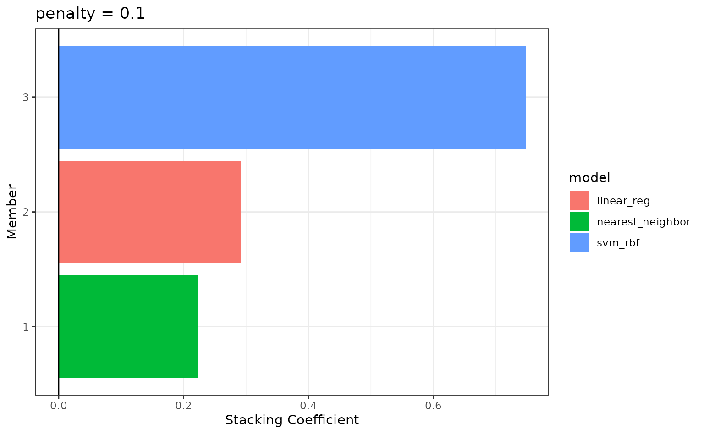

The stacks package provides a shorthand interface for supplying
multiple sets of candidate members in one call to
add_candidates() via the workflowsets package.
Instead of iteratively calling add_candidates() for each
tuning result:
stacks() |>
add_candidates(tuning_result_1) |>
add_candidates(tuning_result_2) |>
add_candidates(tuning_result_3) |>
add_candidates(tuning_result_4) |>
blend_predictions() |>
fit_members()…we can add candidate members “in batch:”
stacks() |>
add_candidates(wf_set) |>
blend_predictions() |>
fit_members()This interface is especially helpful with a large number of candidate members, which is exactly the setting that model stacking excels in.
Setup
This example will parallel the “Getting
Started” vignette, except that we will use workflowsets to bundle
the model workflows that define the candidate members into one workflow
set. We will then train each of them using workflowsets::workflow_map()
and add the results to a model stack using
add_candidates(). If you’re not familiar with the stacks
package, refer to that vignette for the big picture!
First, loading needed packages:
In this example, we’ll again make use of the tree_frogs
data exported with stacks, giving experimental results on hatching
behavior of red-eyed tree frog embryos!
Red-eyed tree frog (RETF) embryos can hatch earlier than their normal 7ish days if they detect potential predator threat. Researchers wanted to determine how, and when, these tree frog embryos were able to detect stimulus from their environment. To do so, they subjected the embryos at varying developmental stages to “predator stimulus” by jiggling the embryos with a blunt probe. Beforehand, though some of the embryos were treated with gentamicin, a compound that knocks out their lateral line (a sensory organ.) Researcher Julie Jung and her crew found that these factors inform whether an embryo hatches prematurely or not!
We’ll start out with predicting latency (i.e., time to
hatch) based on other attributes. We’ll need to filter out NAs (i.e.,
cases where the embryo did not hatch) first.
data("tree_frogs")
# subset the data
tree_frogs <- tree_frogs |>
filter(!is.na(latency)) |>
select(-c(clutch, hatched))Taking a quick look at the data, it seems like the hatch time is pretty closely related to some of our predictors!
theme_set(theme_bw())
ggplot(tree_frogs) +
aes(x = age, y = latency, color = treatment) +
geom_point() +
labs(x = "Embryo Age (s)", y = "Time to Hatch (s)", col = "Treatment")
Let’s give this a go!
Defining candidate ensemble members
As in the workflow-based setting, defining the candidate ensemble
members is undoubtedly the longest part of the ensembling process with
stacks. Instead of evaluating our model specifications via resampling
for each workflow, though, we combine each of the model specifications
with workflow_set(), and then evaluate them in batch with
the workflow_map() function.
First, splitting up the training data, generating resamples, and setting some options that will be used by each model definition:
# some setup: resampling and a basic recipe
set.seed(1)
tree_frogs_split <- initial_split(tree_frogs)
tree_frogs_train <- training(tree_frogs_split)
tree_frogs_test <- testing(tree_frogs_split)
set.seed(1)
folds <- rsample::vfold_cv(tree_frogs_train, v = 5)
tree_frogs_rec <-
recipe(latency ~ ., data = tree_frogs_train)
metric <- metric_set(rmse)We also need to use the same control settings as in the workflow-based setting:
ctrl_grid <- control_stack_grid()We’ll define three different model definitions to try to predict time to hatch—a K-nearest neighbors model (with hyperparameters to tune), a linear model, and a support vector machine model (again, with hyperparameters to tune).
Starting out with K-nearest neighbors, we begin by creating a parsnip model specification:
# create a model specification
knn_spec <-
nearest_neighbor(
mode = "regression",
neighbors = tune("k")
) |>
set_engine("kknn")
knn_spec
#> K-Nearest Neighbor Model Specification (regression)
#>
#> Main Arguments:
#> neighbors = tune("k")
#>
#> Computational engine: kknnNote that, since we are tuning over several possible numbers of neighbors, this model specification defines multiple model configurations. The specific form of those configurations will be determined when specifying the grid search.
From here, we extend the basic recipe defined earlier to fully specify the form of the design matrix for use in a K-nearest neighbors model:
# extend the recipe
knn_rec <-
tree_frogs_rec |>
step_dummy(all_nominal_predictors()) |>
step_zv(all_predictors()) |>
step_impute_mean(all_numeric_predictors()) |>
step_normalize(all_numeric_predictors())
knn_rec
#>
#> ── Recipe ─────────────────────────────────────────────────────────────
#>
#> ── Inputs
#> Number of variables by role
#> outcome: 1
#> predictor: 4
#>
#> ── Operations
#> • Dummy variables from: all_nominal_predictors()
#> • Zero variance filter on: all_predictors()
#> • Mean imputation for: all_numeric_predictors()
#> • Centering and scaling for: all_numeric_predictors()Starting with the basic recipe, we convert categorical predictors to dummy variables, remove predictors with only one observation, impute missing values in numeric predictors using the mean, and normalize numeric predictors. Pre-processing instructions for the remaining models are defined similarly.
Now, specifying the linear model, note that we are not optimizing over any hyperparameters.
# create a model specification
lin_reg_spec <-
linear_reg() |>
set_engine("lm")
# extend the recipe
lin_reg_rec <-
tree_frogs_rec |>
step_dummy(all_nominal_predictors()) |>
step_zv(all_predictors())Finally, putting together the model specification and recipe for the support vector machine:
# create a model specification
svm_spec <-
svm_rbf(
cost = tune("cost"),
rbf_sigma = tune("sigma")
) |>
set_engine("kernlab") |>
set_mode("regression")
# extend the recipe
svm_rec <-
tree_frogs_rec |>
step_dummy(all_nominal_predictors()) |>
step_zv(all_predictors()) |>
step_impute_mean(all_numeric_predictors()) |>
step_corr(all_predictors()) |>
step_normalize(all_numeric_predictors())With each model specification and accompanying recipe now defined, we
can combine them via workflow_set():
wf_set <-
workflow_set(
preproc = list(rec1 = knn_rec, rec2 = lin_reg_rec, rec3 = svm_rec),
models = list(knn = knn_spec, lin_reg = lin_reg_spec, svm = svm_spec),
cross = FALSE
)
wf_set
#> # A workflow set/tibble: 3 × 4
#> wflow_id info option result
#> <chr> <list> <list> <list>
#> 1 rec1_knn <tibble [1 × 4]> <opts[0]> <list [0]>
#> 2 rec2_lin_reg <tibble [1 × 4]> <opts[0]> <list [0]>
#> 3 rec3_svm <tibble [1 × 4]> <opts[0]> <list [0]>Note that each combination of preprocessor and model specification is
assigned a wflow_id that we can use to interface with
individual model definitions:
wf_set |>
extract_workflow("rec3_svm")
#> ══ Workflow ═══════════════════════════════════════════════════════════
#> Preprocessor: Recipe
#> Model: svm_rbf()
#>
#> ── Preprocessor ───────────────────────────────────────────────────────
#> 5 Recipe Steps
#>
#> • step_dummy()
#> • step_zv()
#> • step_impute_mean()
#> • step_corr()
#> • step_normalize()
#>
#> ── Model ──────────────────────────────────────────────────────────────
#> Radial Basis Function Support Vector Machine Model Specification (regression)
#>
#> Main Arguments:
#> cost = tune("cost")
#> rbf_sigma = tune("sigma")
#>
#> Computational engine: kernlabThe elements in this workflow set are nearly ready to be evaluated
with tune_grid(). Before we do so, though, we need to
ensure that we fit each with the appropriate control options, just as we
do when evaluating individual workflows on resamples before passing them
to stacks.
We can iteratively add the appropriate control settings with the
control_stack_grid() shorthand using the
option_add() function:
wf_set <-
wf_set |>
option_add(
control = control_stack_grid(),
metrics = metric
)We can now use the workflow_map() function to map over
each model definition, evaluating hyperparameters on the supplied
resamples.
wf_set_trained <-
workflow_map(
wf_set,
fn = "tune_grid",
resamples = folds
)
wf_set_trained
#> # A workflow set/tibble: 3 × 4
#> wflow_id info option result
#> <chr> <list> <list> <list>
#> 1 rec1_knn <tibble [1 × 4]> <opts[3]> <tune[+]>
#> 2 rec2_lin_reg <tibble [1 × 4]> <opts[3]> <rsmp[+]>
#> 3 rec3_svm <tibble [1 × 4]> <opts[3]> <tune[+]>The results section now contains three sets of tuning results. Note
that the results corresponding to the linear regression have the
subclass resample_results rather than
tune_results—this is expected, as there were no
hyperparameters to tune for that model specification.
workflow_map() knows to fall back to
fit_resamples() rather than tune_grid(), in
this case!
We can extract tuning results with the
extract_workflow_set_result() helper to explore our tuning
results:
extract_workflow_set_result(wf_set_trained, id = "rec1_knn") |>
collect_metrics(summarize = TRUE)
#> # A tibble: 10 × 7
#> k .metric .estimator mean n std_err .config
#> <int> <chr> <chr> <dbl> <int> <dbl> <chr>
#> 1 1 rmse standard 81.3 5 4.37 pre0_mod01_post0
#> 2 3 rmse standard 69.6 5 3.57 pre0_mod02_post0
#> 3 5 rmse standard 63.7 5 3.30 pre0_mod03_post0
#> 4 7 rmse standard 61.2 5 2.95 pre0_mod04_post0
#> 5 8 rmse standard 60.5 5 2.81 pre0_mod05_post0
#> 6 9 rmse standard 59.8 5 2.82 pre0_mod06_post0
#> 7 10 rmse standard 59.3 5 2.83 pre0_mod07_post0
#> 8 12 rmse standard 58.7 5 2.83 pre0_mod08_post0
#> 9 13 rmse standard 58.5 5 2.84 pre0_mod09_post0
#> 10 15 rmse standard 58.2 5 2.88 pre0_mod10_post0With these three model definitions fully specified and tuned in a workflow set, we are ready to begin stacking these model configurations. (Note that, in most applied settings, one would likely specify many more than a handful candidate members from three model definitions.)
Putting together a stack
Building the stacked ensemble, now, takes even fewer lines than it did with individual workflows:
tree_frogs_model_st <-
# initialize the stack
stacks() |>
# add candidate members
add_candidates(wf_set_trained) |>
# determine how to combine their predictions
blend_predictions() |>
# fit the candidates with nonzero stacking coefficients
fit_members()
tree_frogs_model_st
#> # A tibble: 3 × 3
#> member type weight
#> <chr> <chr> <dbl>
#> 1 rec3_svm_0_05_0 svm_rbf 0.747
#> 2 rec2_lin_reg_0_0_0 linear_reg 0.292
#> 3 rec1_knn_0_08_0 nearest_neighbor 0.224The results obtained from building a model stack with workflow sets are identical to those that would result from building a model stack with individual workflows.
To make sure that we have the right trade-off between minimizing the number of members and optimizing performance, we can use:
autoplot(tree_frogs_model_st)![A ggplot line plot. The x axis shows the degree of penalization, ranging from 1e-06 to 1e-01, and the y axis displays the mean of three different metrics. The plots are faceted by metric type, with three facets: number of members, root mean squared error, and R squared. The plots generally show that, as penalization increases, the error decreases. There are very few proposed members in this example, so penalization doesn't drive down the number of members much at all. In this case, then, a larger penalty is acceptable.](workflowsets_files/figure-html/penalty-plot-1.png)
If these results were not good enough,
blend_predictions() could be called again with different
values of penalty. As it is,
blend_predictions() picks the penalty parameter with the
numerically optimal results. To see the top results:
autoplot(tree_frogs_model_st, type = "weights")
To identify which model configurations were assigned what stacking
coefficients, we can make use of the collect_parameters()
function:
collect_parameters(tree_frogs_model_st, "rec3_svm")
#> # A tibble: 10 × 4
#> member cost sigma coef
#> <chr> <dbl> <dbl> <dbl>
#> 1 rec3_svm_0_01_0 0.000977 0.000000215 0
#> 2 rec3_svm_0_02_0 0.00310 0.00599 0
#> 3 rec3_svm_0_03_0 0.00984 0.0000000001 0
#> 4 rec3_svm_0_04_0 0.0312 0.00000278 0
#> 5 rec3_svm_0_05_0 0.0992 0.0774 0.747
#> 6 rec3_svm_0_06_0 0.315 0.00000000129 0
#> 7 rec3_svm_0_07_0 1 0.0000359 0
#> 8 rec3_svm_0_08_0 3.17 1 0
#> 9 rec3_svm_0_09_0 10.1 0.0000000167 0
#> 10 rec3_svm_0_10_0 32 0.000464 0This object is now ready to predict with new data!
Juxtaposing the predictions with the true data:
ggplot(tree_frogs_test) +
aes(
x = latency,
y = .pred
) +
geom_point() +
coord_obs_pred()Looks like our predictions were decent! How do the stacks predictions
perform, though, as compared to the members’ predictions? We can use the
type = "members" argument to generate predictions from each
of the ensemble members.
member_preds <-
tree_frogs_test |>
select(latency) |>
bind_cols(predict(tree_frogs_model_st, tree_frogs_test, members = TRUE))Now, evaluating the root mean squared error from each model:
map(member_preds, rmse_vec, truth = member_preds$latency) |>
as_tibble()
#> # A tibble: 1 × 5
#> latency .pred rec1_knn_0_08_0 rec2_lin_reg_0_0_0 rec3_svm_0_05_0
#> <dbl> <dbl> <dbl> <dbl> <dbl>
#> 1 0 53.9 56.1 55.5 57.5As we can see, the stacked ensemble outperforms each of the member models, though is closely followed by one of its members.
Voila! You’ve now made use of the stacks and workflowsets packages to predict red-eyed tree frog embryo hatching using a stacked ensemble!